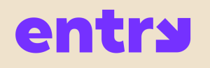

<div class="docs-main">
  <mat-toolbar class="docs-header">
    
    <button mat-flat-button color="primary" class="header-element" [routerLink]="''">
      Components
    </button>
    <span *ngIf="selectedMenuItem" class="header-element"> {{selectedMenuItem.label}}</span>
    <span class="spacer"></span>
    <a mat-flat-button color="primary" target="_blank" class="header-element"
      href="https://github.com/enigmatry/entry-angular-building-blocks">
      
       <span> GitHub</span>
    </a>
  </mat-toolbar>

  <mat-sidenav-container class="docs-container">
    <mat-sidenav mode="side" opened class="docs-sidenav">
      <mat-nav-list class="docs-menu-items">
        <a *ngFor="let item of (menuItems | sort)"
          mat-list-item
          [routerLink]="item.route"
          routerLinkActive="active"
          class="docs-menu-item">
          {{item.label}}
        </a>
      </mat-nav-list>
    </mat-sidenav>

    <mat-sidenav-content>
      <router-outlet></router-outlet>
    </mat-sidenav-content>
  </mat-sidenav-container>
</div>